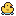

Home Bathroom
Floors 1–3
Where it all starts. Fuzzy bath mats, a shower drain full of Hairballs, and the first Floaters that just won't stay down.
New baddies:  Hairball,
Hairball,  Floater
Floater
Every floor is a fresh 7×9 room with walls, baddies, at least one Medicine Cabinet, and a hole down to the next floor, usually as far from where you land as possible.
Floors 1–3
Where it all starts. Fuzzy bath mats, a shower drain full of Hairballs, and the first Floaters that just won't stay down.
New baddies:  Hairball,
Hairball,  Floater
Floater

Floors 4–6
Fluorescent lights, motion-sensor faucets that never sense you, and the first Stink Eyes and S.B.D.s. Elites start showing up here.
New baddies:  Stink Eye,
Stink Eye,  S.B.D.,
S.B.D.,  Toilet Roach
Toilet Roach

Floors 7–9
You had to ask for the key. Hot Sauce Imps, Laid Bricks, and a Mystery Burrito that's been under the heat lamp far too long call this place home.
New baddies:  Hot Sauce Imp,
Hot Sauce Imp,  Laid Brick,
Laid Brick,  Mystery Burrito
Mystery Burrito

Floors 10–12
It's halftime and the line is out the door. Sweet Corn and Uh-Ohs join the crowd, and Stink Eyes start looking in more than one direction.
New baddies:  Sweet Corn,
Sweet Corn,  Uh-Oh
Uh-Oh

Floors 13–15
Below every restroom in the kingdom. This is where the quest bosses lurk, on floor 14.

Floors 16+
The deepest, fanciest, most dangerous restroom of all. It never ends, and it doesn't get any easier.
Baddie counts grow by 1 every 2 floors (2 + floor ÷ 2). Cabinet points are before Cabinet Raider. "Going down" is what you score for taking the stairs off that floor.
| Floor | Area | Baddies | Elite chance | Cabinets | Cabinet points | Going down | Notes |
|---|---|---|---|---|---|---|---|
| 1 | Home Bathroom | 2 | 0% | 1 | 18 | 10 | |
| 2 | Home Bathroom | 3 | 0% | 1 | 21 | 20 | |
| 3 | Home Bathroom | 3 | 0% | 1–2 | 24 | 30 | |
| 4 | Office Restroom | 4 | 5% | 1–2 | 27 | 40 | Elites begin |
| 5 | Office Restroom | 4 | 8% | 1–2 | 30 | 50 |  Rubber Duck |
| 6 | Office Restroom | 5 | 11% | 1–2 | 33 | 60 | |
| 7 | Gas Station | 5 | 14% | 1–2 | 36 | 70 | |
| 8 | Gas Station | 6 | 17% | 1–2 | 39 | 80 | |
| 9 | Gas Station | 6 | 20% | 1–2 | 42 | 90 | |
| 10 | Stadium Porta-Potty | 7 | 23% | 1–2 | 45 | 100 | Rubber Duck |
| 11 | Stadium Porta-Potty | 7 | 26% | 1–2 | 48 | 110 | |
| 12 | Stadium Porta-Potty | 8 | 29% | 1–2 | 51 | 120 | |
| 13 | The Sewers | 8 | 32% | 1–2 | 54 | 130 | |
| 14 | The Sewers | Boss + extras | 35% | 1–2 | 57 | 140 | Quest boss, stairs locked |
| 15 | The Sewers | 9 | 38% | 1–2 | 60 | 150 | Rubber Duck |
| 16 | The Royal Throne Room | 10 | 41% | 1–2 | 63 | 160 | |
| 17 | The Royal Throne Room | 10 | 44% | 1–2 | 66 | 170 | |
| 18 | The Royal Throne Room | 11 | 47% | 1–2 | 69 | 180 | |
| 19 | The Royal Throne Room | 11 | 50% | 1–2 | 72 | 190 | |
| 20 | The Royal Throne Room | 12 | 50% | 1–2 | 75 | 200 | Rubber Duck |
Past floor 20 it keeps going the same way: more baddies, elites capped at 50%, and a Rubber Duck every 5 floors until you rescue one.